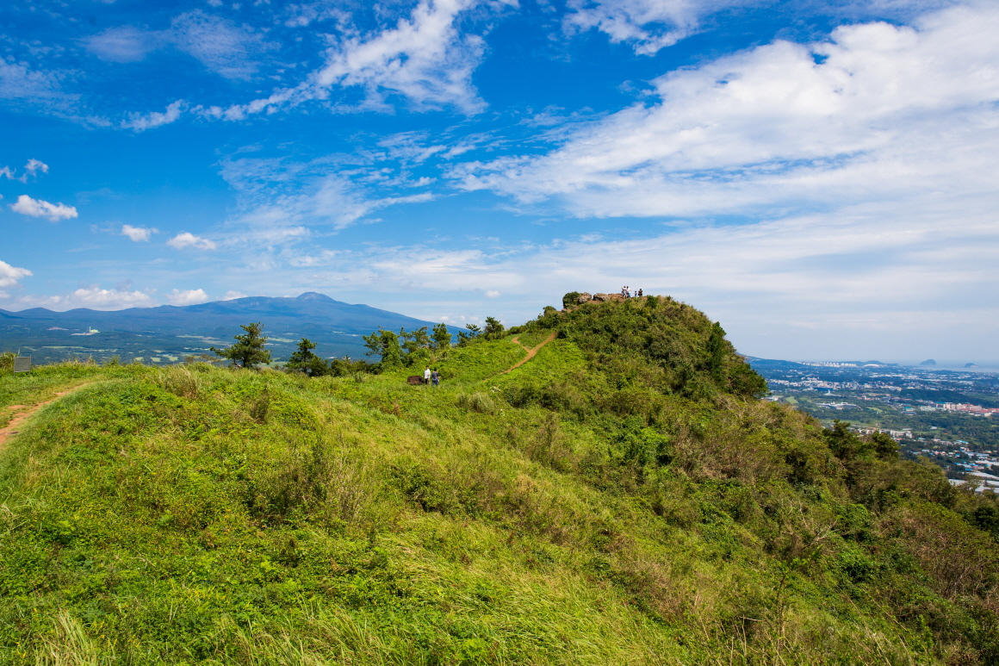

군산 오름
🔸소개
군산은 대정의 난드르(대평리의 넓은 들)를 병풍처럼 에워싸고 있는 오름이다. 화산쇄설성 퇴적층으로 이루어진 기생화산채로는 제주도에서 최대 규모다. 정상에는 용 머리의 쌍봉 모양처럼 솟아 오른 두 개의 뿔바위가 있으며, 동남 사면에는 애기업게돌 등 퇴적층의 차별 침식에 의해 형성된 기암괴석이 발달해 있다. 길이 포장되어 있어 쉽게 오를 수 있으며, 걸어 올라갈 시 30분 정도 소요된다. 정상에서는 한라산부터, 중문관광단지, 마라도, 산방산까지 서귀포 일대를 전망할 수 있다. 특히 동쪽 해안에서 떠오르는 일출의 풍경이 장관인 것으로 알려져 있다. 탐방객과 동네 주민의 방문이 점차 늘어남에 따라 탐방로 근처엔 운동 기구 등의 시설물이 설치되어 있다.
🔸주변 광광지
- 안덕계곡
- 박수기정
- 대평포구
- 논짓물
- 중문미로파크